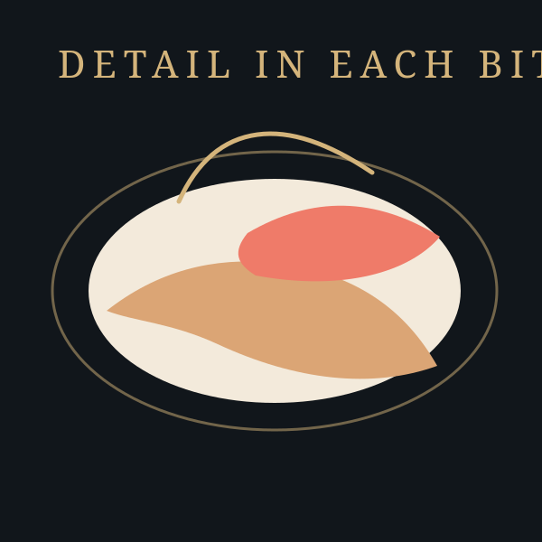
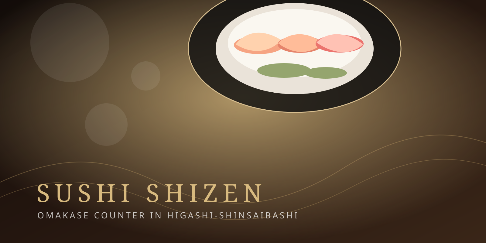
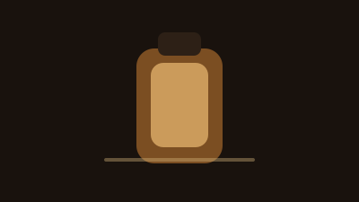
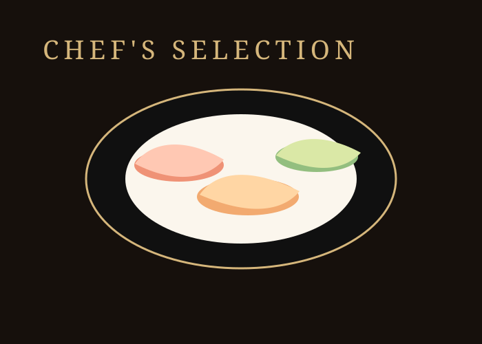

鮨し禅について
東心斎橋の路地にある、カウンター10席の鮨店です。
旬の食材を、おまかせで静かに味わっていただきます。

鮨し禅の想い
余分を削ぎ落とし、温度と間で一貫を整える。
鮨と酒を、落ち着いた会話とともに楽しむための店です。
大阪・東心斎橋
旬、温度、間。
十席のカウンターで、その日の一貫と向き合う。
070-4567-8080 当日のお問い合わせはお電話で
海外からご来店の方へ
食べログで価格と条件を確認し、そのまま予約できます。

海外からのご予約は食べログが最短です。
価格と条件を見たまま予約できます。
いま予約しやすい理由
お電話は営業時間内に承ります。
ご予約は前日までにお願いいたします。
夜は二部制 / 全席禁煙 / カード・電子マネー・QR決済対応
東心斎橋の路地にある、カウンター10席の鮨店です。
旬の食材を、おまかせで静かに味わっていただきます。

余分を削ぎ落とし、温度と間で一貫を整える。
鮨と酒を、落ち着いた会話とともに楽しむための店です。
大将
東心斎橋の10席カウンターで、その日の最良を静かに整える大将。
大将 抑野和彦が、温度と流れを整えながらその日の最良をお出しします。
肩肘張らず、記憶に残る一席を目指しています。
シャリ、酢、醤油、わさび、ネタ。その重なりが最も美しくなる瞬間を大切にしています。
舎利
米を選び、温度と握りでネタの旨みを引き立てます。

お酢
米酢と赤酢を使い分け、シャリに奥行きを持たせます。
醤油
食材ごとに複数の醤油を厳選。一つ一つの素材の個性が最大限に輝くよう、醤油で味を整えます。
産地にこだわった新鮮なわさびを手おろしで使用。ネタの種類に合わせて量と風味を使い分け、最高の一体感を生み出します。
全国の信頼できる仲買人から直送される旬の魚介類を使用。鮮度と品質へのこだわりが、握りの一瞬に広がる極上の旨みを演出します。
鮨し禅のコースは、その日の最良の食材を活かした完全おまかせスタイルです。
旬の恵みと職人の技が織りなす、一期一会の鮨をお楽しみください。
¥15,000〜
（税別 / 夜のおまかせコース）
ランチ
土・日・祝 12:00〜（前日までの予約制）
